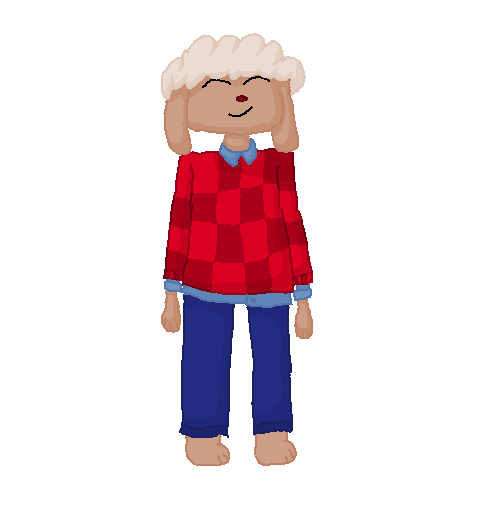
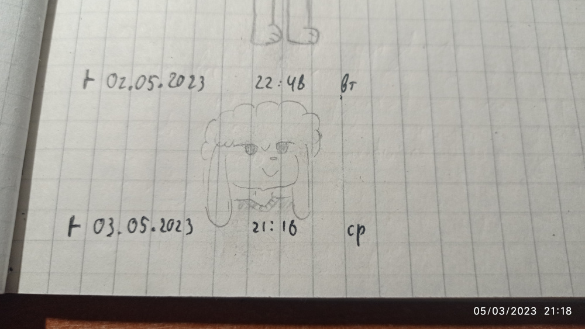

Ostafan
Profile:
Biological class: Sheep & Humanoid
Age: 19
Sex: Male
Intedefication in community:
Date of created: 03.05.2023(30.02.16M)
Traits: Confidence (in teams), Risky (in tricky situations), Sane (in teaching courses)
Country where born: Fur
Work: Not working
Parents:
Mother: Ruby
Father: Myles
Currency plan: 3nd plan(~6400S) from 3nd plan(~5900S)
Intrestings: teaching, team up leader, conducting business
At childhood, Ostafan got leader traits. He tried to play in team games like football(soccer) or volleyball, but activity wasn't for him. Ostafan was intrested in card games like mafia, and in common thread. He was so confidence, what Ostafan can make friends easily. Ostafan's mother, Ruby - "He had a lot of friends. Every week, my son met a new friend and tried to met him with me". His friend, August - "Ostafan looks like sun. Yes not literaly, but you can imagine, how muck rays can he emit".
In school, he studied well. At least, Ostafan can ask someone to help. He also saw his little brother, called Ashton. Ashton - "He was clever. I remember, what Ostafan sat for studying whole darktime".
One time, Ostafan met Jania. They had dialogue.
Ostafan(speaks happy) - "Hi! What's your name?"
Jania(calm) - "Hello. Jania. What about you?"
Ostafan - "Ostafan, nice to meet you!"
Jania - "U too!"
77
Ostafan - "Why are you not so happy?"
Jania - "I'm not so happy as you"
Ostafan - "Ok, then what's your hobby?"
Jania - "Trades. I can assume, what you don't know what is that"
Ostafan - "Yeah, that's true, but friendship and teaming up is my potential. And if you want a friend or a leader, you can contact me!"
Jania - "I have a lot of friends. Do you have?"
Ostafan - "Of course! Are you want some?"
Jania - "I don't think so. Last time, I'm so busy..."
Ostafan - "What do you think about merging our groups?"
Jania - "Then let it happen"
One time, Ostafan tried to open his business. The idea was to manage outcoming currency in radio-ganer. He went to the bank for creddit amount of 24M currency and went to debt. He started to hiring all related employers. He thought, it would be good practise to manage his team to release the project. Later, the team got an issue of not having trusty holder of database to storage this. Ostafan discussing about this a lot. He didn't found holder what satisfied their needs. Ostafan decided to create a safety holder of database, but he has to gone to more deeper dept. His idea was expanded to creating a virtual bank in radio-ganer. Employers asked Ostafan for more employers. Ostafan - "As you can see, you're living for a positive profit except me. I have to return 34M currency to the bank with 4% for each year. you can imagine, how can I fail and lost a lot of them, but still I'm inspiring your progress" After that, they had finished development, and he releasing the project what was called "TetraBank". After release, Ostafan walked to the Later he got out of debt and started to get positive profit.
ReferenceGallery:
